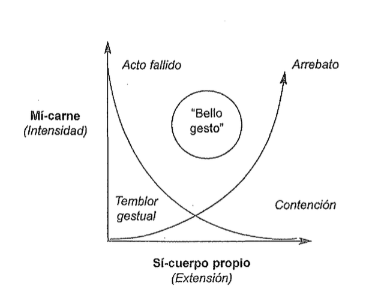
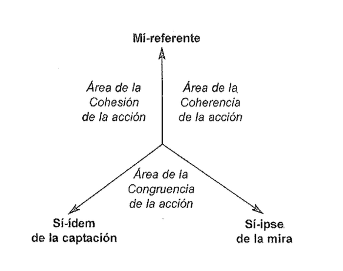
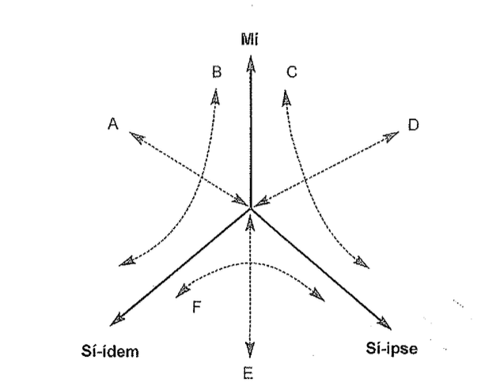
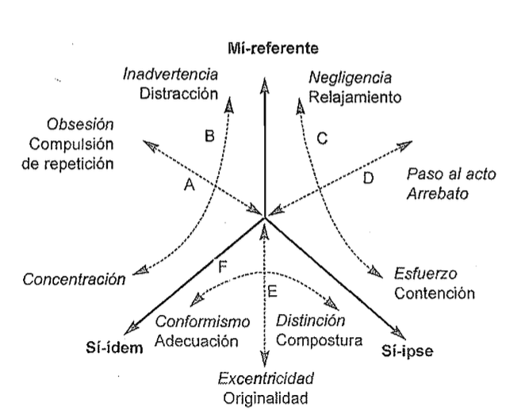

Fontanille 2008 SOMA y SEMA¶
FONTANILLE, Jacques (2008). Soma y sema. Figuras semióticas del cuerpo. Lima: U. de Lima.*
P. 19 y 20 Introducción Cuerpo, signo, sentido
Para el estudioso de la poética, y para un grupo creciente de semióticos, el cuerpo es ante todo la sede de la experiencia sensible y de la relación con el mundo en cuanto fenómeno en la medida experiencia puede prolongarse en prácticas significantes y experiencias estéticas.
Por lo que se refiere al antropólogo, sabe muy bien desde hace tiempo que el cuerpo es simultáneamente uno de los vectores de la sociedad y de la relación con el otro, el objeto y el soporte de prácticas terapéuticas, rituales y simbólicas, el anclaje principal de las “lógicas de lo sensible” y de las formas de relaciones con el mundo que lo rodea, características de cada cultura.
* Material de uso didáctico para estudiantes universitarios.
FONTANILLE, Jacques (2008). Soma y sema. Figuras semióticas del cuerpo. Lima: U. de Lima.
P. 20 Introducción Cuerpo, signo, sentido
En semiótica, la cuestión se plantea del siguiente modo: ¿cuál es la razón para excluir o para integrar el cuerpo?
El cuerpo ha retornado explícitamente a la semiótica en los años ochenta con las temáticas pasionales, con la estesis y con el anclaje de la semiosis en la experiencia sensible. En efecto, en aquellos momentos se planteaba la cuestión de la articulación entre semiótica de la acción y la semiótica de las pasiones. Si se considera las pasiones como un complemento o como un derivado de la semiótica de la acción, difícilmente se pueden evitar las actitudes normativas e idealistas; porque, en ese caso, solo parece racional y bien formada la lógica de la acción, y las pasiones se presentan como perturbaciones o disfunciones de las secuencias narrativas o como efectos superficiales y accesorios de la acción; en ambos casos no hay que contar con el cuerpo, basta con complejizar la teoría de la acción…
21¶
FONTANILLE, Jacques (2008). Soma y sema. Figuras semióticas del cuerpo. Lima: U. de Lima.
P. 21 Introducción Cuerpo, signo, sentido
En cambio, si se considera que la semiótica de las pasiones abre el camino para un modelo más general, dentro del cual la semiótica de la acción aparecería como un caso particular, sometida a determinadas condiciones y un punto de vista restrictivo, en ese caso, se hace necesario revisar en profundidad la organización de la teoría semiótica, establecer las condiciones de pertinencia y definir los límites de los diferentes campos de racionalidad que la constituyen, y principalmente reconsiderar el lugar del cuerpo en la semiosis.
- *La verdadera ganancia teórica y metodológica de la semiótica de las pasiones no consiste en el “retorno del cuerpo” o en la pretendida semiótica de lo continuo, sino en la sintaxis pasional, en la construcción de secuencias de patemas (derivadas de la sintaxis modal), resultando científico a cuyo amparo el tema del cuerpo retorna de manera convincente. Si una semiótica del cuerpo es deseable, no lo es para reforzar una semiótica de las pasiones ni para adecuarse a las modas intelectuales, sino, por el contrario, para abrir un nuevo dominio de investigación.
FONTANILLE, Jacques (2008). Soma y sema. Figuras semióticas del cuerpo. Lima: U. de Lima.
P. 21-22
1 Introducción Cuerpo, signo, sentido
- *El cuerpo había sido excluido de la teoría semiótica por el formalismo, y sobre todo por el logicismo que prevalecía en lingüística estructural de los años sesenta, y también por la teoría de la acción, cuyas deudas con la lógica formal y con la teoría de los juegos son bien conocidas.
La evolución de la definición de la función semiótica es muy significativa a este respecto: en la tradición saussureana y hjemsleviana, la relación entre las dos caras del signo, o entre los dos planos del lenguaje, es siempre una relación lógica, cualquiera que sea su formulación: necesaria o arbitraria, según el punto de vista adoptado, o de presuposición recíproca. Este tipo de relación pasa por alto el operador: se constata, posteriormente, una vez que el signo ha sido estabilizado, o que el lenguaje ha quedado instituido, que el significante y el significado, la expresión y el contenido, están en relación de presuposición recíproca: no hay, pues, por qué preguntarse por el operador de esa relación, ni tampoco por el rol de la enunciación, y menos aún por el del cuerpo.
FONTANILLE, Jacques (2008). Soma y sema. Figuras semióticas del cuerpo. Lima: U. de Lima.
P. 22
En Saussure mismo, la relación constitutiva del signo, simbolizada por una barra horizontal colocada entre el significante y el significado, está por definición desencarnada, Podríamos incluso hacer la hipótesis de que, en la perspectiva de una semiótica del cuerpo, al contrario, la noción de signo sería definitivamente anticuada e inoperante, puesto que los dos tipos de “figuras” —en sentido hjelmsleviano— que lo constituyen, el significante y el significado, de ninguna manera podrían ser tratados como cuerpos… La relación de presuposición recíproca, pues, de hecho, en la formulación logicista de la época, una solidaridad entre ambos planos, percibida ya como algo frágil, móvil e inmotivado, y que exige, por tanto, la explicación de un operador.
Pero desde el momento en que uno se pregunta por la operación que reúne los dos planos de un lenguaje, el cuerpo se hace indispensable: ya sea que se le trate como sede, como vector o como operador de la semiosis, aparece como la única instancia común a las dos caras o a los dos planos del lenguaje, capaz de fundar, de garantizar y de realizar su unión en un conjunto significante.
22-23¶
FONTANILLE, Jacques (2008). Soma y sema. Figuras semióticas del cuerpo. Lima: U. de Lima.
P. 22-23
Otro ejemplo, igualmente significativo, es el del recorrido generativo… Ahí nos encontramos con la dificultad de justificar las conversiones que se producen entre niveles, ya que la única solución aportada es de tipo logicista: el horizonte es siempre el de los algoritmos de reescritura de Chomsky, con reglas de conversión que no son más que desarrollos lógicos de un nivel a otro, de significación constante.
… el recorrido generativo se queda en un “simulacro formal”, en un modelo de estratificación lógica (que se basa en la oposición entre hiponimia e hiperonimia, preferida de la semántica lógica de los años sesenta), que se creía que se podía pasar por alto la presencia de un operador … sin operador explícito, no pasa de ser una consigna y no una solución.
La teoría semiótica obedecería, según eso, al régimen de la “historia”, en el sentido que le asigna Benveniste a este término: así como el relato parece que se cuenta solo, sin narrador alguno, el recorrido generativo “se reconoce” y “se convierte” solo, por sí mismo y automáticamente.
FONTANILLE, Jacques (2008). Soma y sema. Figuras semióticas del cuerpo. Lima: U. de Lima.
P. 24
En cambio, si las conversiones se tratan como “fenómenos” y no como operaciones lógicas formales, entonces aparecen como operaciones que implican un sujeto epistemológico dotado de un cuerpo que percibe contenidos significantes y que calcula y proyecta valores. A cada cambio de nivel de pertinencia, podemos atribuir la rearticulación de las significaciones a la actividad de ese operador sensible y “encarnado”: es él el que percibe las significaciones, articulaciones en forma de “valores posicionales” en el nivel de pertinencia siguiente.
El “retorno del cuerpo” a la teoría semiótica no significa, como podrá verse … una renuncia a su carácter proyectivo científico ni a la búsqueda de las formas y de las “maneras de significar” que lo caracterizan. En cambio, proporciona una evidente alternativa a las soluciones lógicas: en vez de tratar los problemas teóricos y metodológicos, quedamos invitados a tratarlos desde el ángulo fenomenológico, y para eso se requiere contar con el cuerpo del operador. Comprometernos a tratar una relación, una operación o una propiedad como un fenómeno, es comprometernos a examinar la formación de las diferencias significativas y de las posiciones axiológicas a partir de la percepción y de la presencia sensible de esos fenómenos.
FONTANILLE, Jacques (2008). Soma y sema. Figuras semióticas del cuerpo. Lima: U. de Lima.
P. 24-25
Durante el tiempo en que la semiótica anduvo en busca de soluciones “lógicas” y formales, mantuvo relaciones bastante ambiguas con la psicología, y particularmente con el psicoanálisis como las soluciones retenidas desalojaban buena parte de la significación humana, esa “parte de la sombra” de la que se ocupa el psicoanálisis, la semiótica no tenía otro recurso que declararla no-pertinente, o refugiarse, en último término, en la metapsicología freudiana para “semiotizarla”. Sin embargo, la semiótica de las pasiones se ha desarrollado claramente como una alternativa a una semiótica psicoanalítica; hoy no es necesario pasar por la metapsicología… para comprender el efecto que produce el hecho de “tener” o de “ser” un cuerpo en un actante semiótico y sobre todo en un actante pasional.
FONTANILLE, Jacques (2008). Soma y sema. Figuras semióticas del cuerpo. Lima: U. de Lima.
P. 25
Ciertamente, esta posición no deja de tener consecuencias. Por ejemplo, una semiótica de la acción en el cuerpo del actante y no solamente en el encadenamiento lógico y canónico de las pruebas, va a devolver a su lugar al acto fallido, a la torpeza y a la peripecia, fenómenos que habían sido suprimidos en una reconstrucción retrospectiva de la lógica de la acción. Igualmente, la enunciación de un cuerpo-actante mezcla inevitablemente balbuceos, períodos vacilantes, fragmentos de “lengua de palo”, lapsus y desarrollos argumentados.
En consecuencia, la pertinencia de tal o cual acto particular no puede ser reducida a un “programa” de búsqueda o a un “proyecto” de enunciación; el acto fallido es tan significativo como el acto programado, y su carácter aparentemente accidental solamente enmascara la confrontación entre diversas direcciones significativas o entre varias isotopías …
25-26¶
FONTANILLE, Jacques (2008). Soma y sema. Figuras semióticas del cuerpo. Lima: U. de Lima.
P. 25-26
Segundo ejemplo, El proceso de semiotización del entorno, particularmente la semiotización de los objetos y de los lugares —paisajes y ciudades, por ejemplo— no se reduce ya, para un operador encarnado, a la simple proyección de un simulacro semiótico sobre objetos que pertenecen a otras disciplinas (la ergonomía, la geografía, el urbanismo, etcétera). Hoy puede ser considerado como un proceso de elaboración de la significación a partir de la experiencia corporal de tales objetos y de tales lugares. Como prolongación del sentimiento de existencia, el cuerpo se despliega a través de “prótesis” y de “interfaces” en forma de objetos o de partes de objetos que conservan la memoria de su origen y de su destino corporales, y que resultan de la proyección de las figuras del cuerpo sobre el mundo. La semiotización del entorno —por ejemplo, la instauración de un espacio como “paisaje”— o, no es solamente el resultado de la percepción o de la adopción de un punto de vista, sino también del reconocimiento de una experiencia corporal de las formas del mundo que nos rodea.
FONTANILLE, Jacques (2008). Soma y sema. Figuras semióticas del cuerpo. Lima: U. de Lima.
P. 26-27
La aproximación semiótica al cuerpo debe finalmente asumir una ambivalencia recurrente, que resulta del doble estatuto del cuerpo en la producción de conjuntos significantes: (1) el cuerpo como sustrato de la semiosis, y (2) el cuerpo como figura semiótica. Aparentemente la distinción es fácil de establecer : en el primer caso, el cuerpo participa de la modalidad semiótica y proporciona uno de los aspectos de la “sustancia” semiótica; en el segundo caso, el cuerpo es una figura entre otras; adopta entonces la forma de las figuras del discurso, figura de la expresión o del contenido, que resultan del proceso de semiotización y de la “puesta en forma” del cuerpo de los actores.
(p. 27) Entre el cuerpo como “resorte” y “sustrato” de las operaciones semióticas profundas, por un lado, y las figuras discursivas del cuerpo, por otro, se abre un campo para un recorrido generativo de la significación, recorrido que no es ya formal y lógico, sino fenoménico y “encarnado”.
27-28¶
FONTANILLE, Jacques (2008). Soma y sema. Figuras semióticas del cuerpo. Lima: U. de Lima.
P. 27-28
Por tal razón, daremos gran importancia a las figuras discursivas del cuerpo (el movimiento, las envolturas corporales, por ejemplo), pues son ellas las que dan acceso a las representaciones profundas de la semiosis en acto. Por la misma razón, nos interesamos por las diferentes formas de los campos sensibles y perceptivos, ya que son ellas las que fundan las formas del campo enunciativo del discurso.
En el camino que aquí propondremos, en tres momentos… I.- El cuerpo del actante, II.- Modos de lo sensible y sintaxis figurativa, III,. Figuras del cuerpo y memorias discursivas, obedece globalmente a esta última hipótesis de trabajo: (I) Reconocer que el actante es un cuerpo, es también preguntarse por los efectos de ese cuerpo sobre la semiosis y sobre las instancias de discurso que la toman a cargo, así como la teoría del acto y de la acción, de los que es operador;
(p. 28) (II) examinar luego la diversidad de los modos de lo sensible es también explorar la de los campos sensibles y construir los primeros elementos de una sintaxis de las figuras corporales del discurso; (III) la hipótesis de una sintaxis figurativa basada en las figuras del cuerpo conduce finalmente a una tipología de tales figuras, que se presentan, por un lado, como formas semióticas de la polisensorialidad, y por otro, como los soportes de la memoria del discurso.
FONTANILLE, Jacques (2008). Soma y sema. Figuras semióticas del cuerpo. Lima: U. de Lima.
P. 31 Primera parte. El cuerpo del actante Cap. 1. El cuerpo, el acto y los esquemas narrativos
Introducción: Cuerpo y semiosis
La propioceptividad es considerada como el término complejo de la categoría “interoceptividad/exteroceptividad”; en efecto, en la experiencia de la significación, el cuerpo propio es la única entidad común al yo y al mundo; y en la construcción de la significación, la operación de la semiosis, por la sumisión de la exterocepción a la interocepción, gracias a la mediación del cuerpo propio, permite la relación de un plano de la expresión (de origen exteroceptivo) y de un plano del contenido (de origen interoceptivo).
No existen categorías semióticas que pertenezcan a priori a la expresión o al contenido. En efecto, el isomorfismo de los dos planos de un lenguaje es específico de cada semiosis, y la relación entre expresión y contenido se redefine con cada nueva enunciación; de ello da testimonio, por ejemplo, la posibilidad de establecer en cada discurso concreto, nuevos sistemas semisimbólicos que redefinen y desplazan la relación entre el plano de la expresión y el plano del contenido.
FONTANILLE, Jacques (2008). Soma y sema. Figuras semióticas del cuerpo. Lima: U. de Lima.
P. 31
… En otros términos, la toma de posición del cuerpo determina la distinción entre exterocepción e interocepción: los efectos de la interioridad y de exterioridad dependen por completo de la posición que adopte el cuerpo-carne propioceptivo en el momento en que se instala como instancia enunciante…
(p, 32) Resumiendo: cada enunciación produce una semiosis en la medida en que procede de una toma de posición del cuerpo en el mundo, toma de posición que determina ipso facto un dominio interior y un dominio exterior: lo propio y lo no-propio. La semiosis se traduce ante todo por el establecimiento de un isomorfismo entre los dos dominios, isomorfismo garantizado por el hecho del cuerpo, y es él el que los convierte, respectivamente, en un plano del contenido o en un plano de la expresión
FONTANILLE, Jacques (2008). Soma y sema. Figuras semióticas del cuerpo. Lima: U. de Lima.
P. 32 De la figura al ícono actancial
El cuerpo del actante
La nueva cuestión que se plantea ahora es la del cuerpo del actante: no se trata ya de rastrear actantes en el cuerpo que se encuentra en actividad, sino comprender cómo un cuerpo deviene en actante, trátese del actante de la instancia del discurso en general, del actante de la enunciación o del actante enunciado. Se trata también de pasar del actante concebido como una pura posición formal, calculable a partir de una clase de predicados, a un actante concebido como una posición corporal, es decir, como una carne y una forma corporal, sede primordial de los impulsos y de las resistencias que sostienen la acción transformadora de los estados de cosas.
Eso significa que el actante es el punto de intersección entre dos procesos generativos convergentes; por un lado, en cuanto posición formal calculable a partir de los argumentos típicos de una clase de predicados, y, por otro, en cuanto posición corporal definida por el desembrague a partir de la instancia del discurso, sede y operador de la semiosis.
FONTANILLE, Jacques (2008). Soma y sema. Figuras semióticas del cuerpo. Lima: U. de Lima.
P. 33
Distinguiremos, de un lado, la carne, es aquello que resiste o colabora con la acción transformadora de los estados de cosas, y que cumple también el rol de “centro de referencia”, el centro de la “toma de posición”. La carne es la instancia enunciante en cuanto principio de resistencia/impulso material, pero también en cuanto posición de referencia, conjunto material que ocupa una posición de la extensión, a partir de la cual se organiza dicha extensión. La carne es al mismo tiempo la sede del núcleo sesoriomotor de la experiencia semiótica.
Por otro lado, está el cuerpo propio, es decir, aquello que se constituye en la semiosis, lo que se construye con la reunión de los dos planos del lenguaje en el discurso en acto. El cuerpo propio es el portador de la identidad en la construcción y en el devenir, el cual obedece, por su parte, a un principio de fuerza directriz.
Por convención, y sin ningún investimiento metapsicológico, consideramos que la carne es el sustrato del MÍ del actante, y que el cuerpo propio es el soporte de su SÍ.
33¶
FONTANILLE, Jacques (2008). Soma y sema. Figuras semióticas del cuerpo. Lima: U. de Lima.
P. 33
- El Mí correspondería, en el caso particular de un actante del habla, al “locutor en cuanto tal” (Ducrot), al individuo concreto que articula, que farfulla, que grita, etcétera; es también, por la toma de posición de la que es responsable, el centro de referencia del discurso, el punto de confluencia de las coordenadas del discurso, y de todos los cálculos de retención y de protensión. El Mí es pues esa parte del EGO que es a la vez referencia y pura sensibilidad, sometida a la intensidad de las presiones y de las tensiones que se ejercen en el campo de presencia.*
33-34¶
FONTANILLE, Jacques (2008). Soma y sema. Figuras semióticas del cuerpo. Lima: U. de Lima.
P. 33-34
El Sí sería, en cambio, la fuente de las “miras”, el operador de las “captaciones”. Corresponde a la parte de Ego que se construye en y por la actividad discursiva. Pero habrá que distinguir aquí, al modo de Ricoeur, dos modos de construcción de la identidad “en Sí”: por un lado, una construcción por repetición, por recubrimiento continuo de las identidades transitorias, y por similitud (el Sí-idem), y por otro lado, una construcción por mantenimiento y permanencia de una misma dirección (el Sí-ipse).
(P. 35)
El problema siguiente, desde el momento en que se ha reconocido que el actante es ante todo un cuerpo sometido a impulsos, presiones y tensiones, es el de la “puesta en marcha” del actante, y, luego, el de la formación de una identidad a partir de esos impulsos, presiones y tensiones que lo afectan.
En otros términos: ¿cómo pueden emerger formas e identidades actanciales a partir (1) de la materia corporal, la carne, la sustancia del Mí y (2) de las fuerzas de las tensiones, diversas y opuestas, que se ejercen sobre ella? … La formación de un actante a partir de un cuerpo aparece como un caso particular de esa hipótesis general que funda la sintaxis figurativa en las interacciones entre materia y energía.
39¶
FONTANILLE, Jacques (2008). Soma y sema. Figuras semióticas del cuerpo. Lima: U. de Lima.
P. 39 Una doble identidades
Para lo que aquí nos interesa, es decir, para la emergencia de una doble identidad del cuerpo del actante, este dispositivo permite comprender cómo un Sí en devenir se desprende progresivamente de un Mí de referencia. El Mí de referencia es la carne animada por la sensoriomotricidad; el__ Sí en devenir es el cuerpo propio cuyos límites e individualidad son progresivamente definidos por la acumulación y por la memoria de las reacciones de saturación y de remanencia__. En sum… el Sí (el cuerpo propio) sería, entre otras cosas, la memoria del Mí (la carne) y la suma de las huellas que conserva.
… En tal sentido, la sensoriomotricidad se convierte en un subsistema de control que puede potenciar o debilitar los umbrales de saturación y de remanencia.
(p. 38) … El cuerpo adquiere un “campo sensoriomotor”; de él da testimonio la naturaleza modal de los dos umbrales de inercia: la remanencia y la saturación.
FONTANILLE, Jacques (2008). Soma y sema. Figuras semióticas del cuerpo. Lima: U. de Lima.
P. 40 Sintaxis figurativa y experiencia sensoriomotriz
La sintaxis sensoriomotriz elemental
Las mociones íntimas de la carne, pulsiones, dilataciones y contracciones, están sometidas a los umbrales de saturación y de remanencia, y por este hecho son modalizadas como tolerables o intolerables, como perceptibles o imperceptibles, y de este modo concurren a la polarización tímica de la experiencia. La sensoriomotricidad proporciona, en suma, al conjunto de nuestra relación sensible con el mundo una mira intensional y una orientación axiológica. La mira misma, cuando se la analiza en sus etapas aspectuales: “salir de sí”, “dirigirse a” y “alcanzar algo”, solo puede ser tratada como un movimiento orientado.
La elaboración de una sintaxis sensoriomotriz es, pues, una premisa para construir una sintaxis figurativa más general, en la que adquiera forma la identidad corporal del actante, ya que la sintaxis sensoriomotriz es el prototipo de toda sintaxis sensible y encarnada.
FONTANILLE, Jacques (2008). Soma y sema. Figuras semióticas del cuerpo. Lima: U. de Lima.
P. 40
Globalmente, las transformaciones elementales del cuerpo se presentan intuitivamente, del lado del Mí, como la dilatación y la contracción de la carne, y del lado del Sí, como estabilidad y la inestabilidad de la forma del cuerpo propio. La estabilidad se traduce, entre otras cosas, por la clausura y la inmovilidad, y la inestabilidad, por la apertura y la deformación.
FONTANILLE, Jacques (2008). Soma y sema. Figuras semióticas del cuerpo. Lima: U. de Lima.
P. 41 El cuerpo, el acto y los esquemas narrativos
Las figuras de la degustación, por ejemplo, relatan un conflicto entre la materia que proporciona el contacto gustativo y determinadas intensidades sensoriales: un vino “áspero” pone en escena la difícil travesía de una materia resistente por un flujo que ella segmenta; una crema “pastosa”, en cambio, indica la inmersión de un flujo de intensidad en una materia que lo absorbe y lo neutraliza. … Del mimo modo, el lazo entre el olor y la materia viva no necesita demostración: el olor es, como … la emanación de la intimidad del ser vivo, y las categorizaciones olfativas más frecuentes corresponden a las frases de los ciclos de vida. Por lo que aquí nos interesa particularmente es el proceso por el que la materia viva emite el efluvio olfativo. La obsesión de la penetración por el olor está asociada a la aprehensión que proporciona el contacto íntimo de la carne con las emanaciones de otras carnes… La figura olfativa se presenta en esa perspectiva como el producto de una modificación de la relación entre fuerzas cohesivas y dispersivas aplicadas a la materia viva.
42¶
FONTANILLE, Jacques (2008). Soma y sema. Figuras semióticas del cuerpo. Lima: U. de Lima.
P. 42
Las figuras así producidas pueden convertirse, bajo ciertas condiciones, en iconos. Íconos visuales, eidéticos, íconos olfativos y gustativos, los cuales serán siempre el resultado de esos equilibrios/desequilibrios, que se producen en la interacción entre materia y energía. … La iconicidad puede ser definida, en términos generales, como un principio de homologación entre el plano del contenido (interoceptivo) y el plano de la expresión (exteroceptivo). La hipótesis que proponemos es la siguiente: dicha homologación no depende de la semejanza, sino de una correlación y de un ajuste sensoriomotor. La iconicidad del lenguaje se basa en el establecimiento de una correlación entre una figura sensoriomotriz (interna) y una figura de interacción entre materia y energía (externa). El reconocimiento de un ícono puede reducirse a una percepción de una correlación entre una determinada figura externa y una experiencia sensoriomotriz interna.
FONTANILLE, Jacques (2008). Soma y sema. Figuras semióticas del cuerpo. Lima: U. de Lima.
P. 42
El caso de la onomatopeya permitirá precisar este punto. Si la cadena significante “/krak/” puede pasar por una onomatopeya del crujido sonoro, no es ciertamente por la semejanza entre dos sonidos, el sonido lingüístico y el sonido natural … Existe una verdadera homologación entre expresión y contenido, pero se basa en un principio distinto del de la semejanza. En efecto, el sonido natural del “crujido” es implícitamente esquematizado por el tipo de de interacción entre materia y energía que lo produce: la figura sonora del crujido se forma a partir de la manera como una fuerza sonora lingüística krak/ se forma a partir de la manera como las materias bucales entran en contacto o son puestas en movimiento por efecto de las fuerzas de articulación oral que las animan.
43¶
FONTANILLE, Jacques (2008). Soma y sema. Figuras semióticas del cuerpo. Lima: U. de Lima.
(P43)
La iconicidad de la onomatopeya podría, por tanto, ser definida a partir de la equivalencia entre dos relaciones; por un lado, la relación entre una figura sonora natural y la interacción materia/energía que la producen, y por otro, la relación entre la figura sonora lingüística y la sensación motriz bucal que corresponde a su articulación. Una equivalencia entre dos relaciones no es otra cosa que un sistema semi-simbólico del tipo:
A es a B como X es a Y
donde A y X son figuras sensoriales de cualquier tipo, y B e Y son esquemas de la interacción materia/energía, interna en caso de B, externa en caso de Y.
51¶
FONTANILLE, Jacques (2008). Soma y sema. Figuras semióticas del cuerpo. Lima: U. de Lima.
P. 51 El Mí y el Sí del actante narrativo: Un modelo de producción del acto
Todo actante “encarnado” se puede analizar en dos instancias por lo menos; el Mí-carne de referencia y el Sí-cuerpo propio en devenir. El Sí está en construcción en los desplazamientos y en los gestos del actor, y esta construcción en los desplazamientos y en los gestos del actor, y esa construcción puede obedecer a un principio de repetición y de similitud (el Sí-idem de los roles narrativos), o a un principio de “mira” permanente (el Sí-ipse de las “miras” éticas y estéticas, de las actitudes).
- Si aceptamos que toda identidad actancial se construye en el acto, y que todo acto emerge de la animación sensoriomotriz del actante, el modelo de producción del acto se apoyará necesariamente en la interacción entre la carne y el cuerpo propio, entre el Mí y el Sí. El acto será entonces el resultado de la correlación (convergente o divergente) entre las presiones ejercidas sobre el Mí-carne (de tipo sensoriomotor) y las presiones ejercidas sobre el Sí-cuerpo propio*. Seguir siendo el mismo, devenir y apropiarse, etcétera. Toda figura de acto puede ser definida, en este sentido, como el resultado de una doble determinación, de un equilibrio o de un desequilibrio entre esos dos tipos de presiones,
51¶
FONTANILLE, Jacques (2008). Soma y sema. Figuras semióticas del cuerpo. Lima: U. de Lima.
P. 51
El Mí-carne será representado en el modelo por una valencia de intensidad (fuerza, resistencia, energía, intensidad sensible), y el Sí-cuerpo propio, por una valencia de extensión (duración, espacio, número de alteridades integradas, etcétera). Ahí pueden tener cabida: el acto programado (mantenido y contenido), el acto fallido, el arrebato, el temblor y el “bello gesto” (o gesto noble).

52¶
FONTANILLE, Jacques (2008). Soma y sema. Figuras semióticas del cuerpo. Lima: U. de Lima.
P. 52 Los tres ejes de la identidades
Recapitulemos: siendo el Mí-carne la instancia de referencia, la identidad postulada, aunque siempre susceptible de desplazarse, adopta una o varias posiciones, y es la sede y la fuente de la sensoriomotricidad, que determina toda “mira” y toda “captación” semióticas. Es también el “sistema material” cuya inercia puede manifestarse por remanencia o por saturación.
El Sí-cuerpo es la instancia que se refiere al Mí-carne (de donde procede su carácter reflexivo para designarlo) y la sensoriomotricidad para seguir presiones o para contrariarlas, para acompañarlas o para derivarlas; es pues, la identidad en construcción en el ejercicio mismo del hacer semiótico.
53¶
FONTANILLE, Jacques (2008). Soma y sema. Figuras semióticas del cuerpo. Lima: U. de Lima.
P. 53 El cuerpo, el acto y los esquemas narrativos
Como hemos distinguido dos tipos de Sí, vamos a oponer:
● La identidad de los roles (Sí-idem), cuyo modo de producción implica que cada nueva fase recubre la precedente; ese tipo corresponde a la perspectiva de captación.
● La identidad de las actitudes (Sí-ipse), cuyo modo de producción se basa en la acumulación progresiva de rasgos transitorios, y en el hecho de que la nueva fase no recubre la fase precedente, puesto que cada identidad transitoria, el actante se descubre siendo otro, ese tipo corresponde a la perspectiva de la mira.

53¶
FONTANILLE, Jacques (2008). Soma y sema. Figuras semióticas del cuerpo. Lima: U. de Lima.
P. 53
Los tres tipos de identidad permiten describir el devenir del actante, y remiten por consiguiente a tres operaciones semióticas de base: la toma de posición y la referencia (por lo que se refiere al Mí-carne), la captación (por lo que atañe al Sí-idem) y la mira (por lo que concierne al Sí-ipse). …
Las “áreas” indicadas designan las zonas de correlación donde van a aparecer diferentes figuras de actos. La cohesión de la acción se apoya en la superposición de las diferentes fases de Mí-carne con el principio de repetición-similitud que caracteriza al Sí-idem. * La coherencia de la acción se basa en la conducción de las fases del Mí-carne por el principio de “mira” permanente que caracteriza al Sí-ipse. La congruencia de la acción, finalmente, reposa en la confrontación entre los dos modos de construcción del Sí (la “repetición-similitud” de “roles” es considerada como más o menos congruente con la permanencia y el mantenimiento de la “mira” que caracteriza a las “actitudes”). La congruencia, en suma, es la resultante de la cohesión y la coherencia. *
FONTANILLE, Jacques (2008). Soma y sema. Figuras semióticas del cuerpo. Lima: U. de Lima.
P. 54 Diferentes regímenes de la acción
El desarrollo del modelo consiste entonces en explorar las diferentes posibilidades de correlaciones tensivas entre esos tres tipos de valencias … las correlaciones directas y las inversas; cada correlación es susceptible de definir una afinidad de valores posicionales y, por tanto, de figuras del acto.

FONTANILLE, Jacques (2008). Soma y sema. Figuras semióticas del cuerpo. Lima: U. de Lima.
P. 55

Obtenemos así tres zonas de valencias débiles (en el centro del esquema), donde el acto apenas emerge por ausencia de presiones y de impulsos del Mí y del Sí, y se mueve en zonas de valencias fuertes… entre las que hay que distinguir:
55¶
FONTANILLE, Jacques (2008). Soma y sema. Figuras semióticas del cuerpo. Lima: U. de Lima.
P. 55
● las zonas donde las tensiones del Mí y del Sí se combaten y se controlan recíprocamente (arcos de correlación B, C, F):
1) las zonas donde el Mí el Mí domina (inadvertencia y distracción & negligencia y relajamiento)
2) las zonas donde el Sí-idem domina (concentración & conformismo);
3) las zonas en las que domina el Sí-ipse (esfuerzo y contención & distinción y compostura);
● las zonas donde las tensiones del Mí y del Sí se confrontan y se amplifican recíprocamente sin controlarse (ejes de correlación A, D y E):
4) la zona del comportamiento obsesional y de la compulsión de repetición (Mí + Sí-idem).
5) la zona del paso del acto y del arrebato (Mí + Sí-ipse);
6) la zona del comportamiento original y excéntrico (Sí-idem + Sí-ipse).
FONTANILLE, Jacques (2008). Soma y sema. Figuras semióticas del cuerpo. Lima: U. de Lima.
P. 56
Podemos observar ahora que esos dos tipos de zonas de zonas reaccionan de manera diferente a nuestras tentativas de esquematización.
En las tres zonas en las que las valencias se refuerzan mutuamente, donde el Mí y el Sí entran en colisión, la ausencia de control del Sí sobre el Mí, particularmente, engendra un discurso que fortalece las tensiones del Mí y sus incesantes desplazamientos, sea en modo de repetición obsesional, sea en modo de “mira” delirante; la tercera colusión se produce entre los dos tipos de Sí, que expresa la congruencia idiosincrática del discurso.
...la tensión y el control recíproco entre las instancias del actante son necesarios para la puesta en forma de recorridos esquematizables. Si esta condición no se cumple, el devenir del actante se vuelve entrópico, y no puede adoptar la forma de un recorrido esquematizable. Cuando el Mí asume las presiones y tensiones del Sí, el acto solo significa el repliegue del actante sobre las tendencias y las pulsiones del Mí; es ese caso, no se produce la construcción del actante en el curso de la acción porque no existe ninguna alteridad que pueda ser integrada. En otros términos, las huellas de las presiones y tensiones en la carne del Mí se acumulan y se refuerzan sin por eso constituyan una memoria semiótica esquematizable.
56¶
FONTANILLE, Jacques (2008). Soma y sema. Figuras semióticas del cuerpo. Lima: U. de Lima.
P. 56
En el desarrollo inducido por el modelo propuesto valida la hipótesis inicial, según la cual la actancialización de un sistema corporal se basaría en un devenir no-lineal, y más precisamente, en la inercia corporal (remanencia & saturación); allí donde el Mí-carne opone a las presiones del Sí su inercia, los recorridos del actante son esquematizables y significantes; donde esa inercia desaparece, los recorridos zozobran en una insignificancia incontrolable.
En efecto, las tres zonas en las que el Sí controla el Mí o al otro tipo de Sí, los recorridos son esquematizables. No solamente cada valor es definido allí por una valencia fuerte y por una valencia débil, sino que, además, cada instancia dominante (valencia fuerte) controla a la vez a las otras dos.
1) La zona en la que el Mí domina es la de los esquemas de emergencia. En el seno mismo del desorden de los actos no programados, de un encadenamiento de torpezas, de actos fallidos o de negligencias, el Mí retoma la iniciativa para marcar su singularidad referencial contra las tensiones de repetición del Sí-idem y contra las tensiones teológicas del Sí-ipse, al mismo tiempo… Como ilustración, se podría considerar que los relatos de errancia … pertenecen a esa zona, ya que la errancia se presenta concretamente como la suspensión de la búsqueda y como la renuncia a los programas y a las “miras” establecidas. En esa zona de los esquemas de emergencia, todo como un discurso re-iniciase la memoria semiótica del actante.
FONTANILLE, Jacques (2008). Soma y sema. Figuras semióticas del cuerpo. Lima: U. de Lima.
P. 57
2) La zona en la que domina el Sí-idem es la zona de la programación, aquella en la que la identidad conseguida por repetición y similitud controlada al mismo tiempo las tensiones individualizantes del Mí y las tensiones teleológicas del Sí-ipse. En esta zona, tiene que ser definido a priori o reconocido a posteriori aquello que debe ser repetido como rol para que el recorrido del actante tenga sentido. En esas condiciones, el cuerpo sufre una especialización restrictiva… el actante “repite su lección”, aplica guiones preestablecidos. En tal sentido, esa zona donde la memoria semiótica del actante está totalmente consagrada a su programación, es también zona de eficacia y de la economía narrativas.
3) La zona en la que domina el Sí-ipse es la zona de la * construcción en perspectiva, la tensión teleológica se impone al mismo tiempo a las tensiones individualizantes del Mí y a las exigencias de repetición y de similitud del Sí-ídem. El recorrido del actante procede entonces de la definición de una “mira” y de una actitud, que, según los casos, será una “imagen-meta”, un “modelo”, un “simulacro”, una “esperanza· o un “ideal”. Esa sería, en cierto modo, el área de la ética narrativa*, en la que se desarrollan los relatos de aprendizaje y de búsqueda de ideales.
58¶
FONTANILLE, Jacques (2008). Soma y sema. Figuras semióticas del cuerpo. Lima: U. de Lima.
P. 58 Cambios de régimen
Cuando las tensiones identitarias del actante se invierten, cuando los equilibrios se modifican, se cambia el régimen narrativo. … se produce por debilitamiento de la valencia del Sí-ídem, que tiene por corolario el aumento de la valencia del Mí, (la valencia del Sí-ipse permanece en el nivel más bajo). En la historia de So y la Cíclope, se puede apreciar con toda claridad que So tiene que “olvidar” a cada momento el programa que le ha sido impuesto por para acceder al recorrido de selección axiológica: suspensión del principio de repetición de roles, por un lado; suspensión de mas “miras” éticas, por otro: suspensión de las “huellas” afectivas y morales para dejar libre el camino a un recorrido singular, que se basa en iniciativas del Mí-carne (fatiga y búsqueda de confort, torpeza, compasión, venganza, etcétera). De la misma manera, la Cíclope tiene que olvidar a cada instante el momento precedente para dejar que se exprese la necesidad contingente de matar.
59¶
FONTANILLE, Jacques (2008). Soma y sema. Figuras semióticas del cuerpo. Lima: U. de Lima.
P. 59 Conclusión: cuerpo, tensiones y conversiones
La encarnación (embodiment) de las estructuras semióticas no implica necesariamente —al menos, tratamos de demostrarlo— un desplazamiento teórico hacia la psicología cognitiva ni hacia la neurobiología; recoge únicamente, sobre todo en la perspectiva de una teoría semiótica de las instancias actanciales, dos premisas a guisa de hipótesis: (1) la distinción entre la instancia sesoriomotriz de referencia, el Mí y la instancia corporal de construcción durante el proceso significante, el Sí, y (2) el principio de iconización de una y otra instancia en la interacción entre materia y energía.
Globalmente, y por la comparación con la semiótica estructural clásica, desarrolla a lo largo del recorrido generativo, esa encarnación de las estructuras semióticas —y particularmente las actanciales— introduce, no obstante, dos complementos notables: (1) la fuerza (energía, tensión, intensidad, etcétera) ha de ser considerada como una propiedad del dominio sensible y conceptual en vías de semiotización, con el mismo derecho que la sustancia material o conceptual … y (2) las estructuras tensivas contribuyen al funcionamiento del recorrido generativo proporcionando un modelo y una explicación de las conversiones.
FONTANILLE, Jacques (2008). Soma y sema. Figuras semióticas del cuerpo. Lima: U. de Lima.
P. 59
Nos proponemos, pues, examinar en este libro, la hipótesis siguiente: en cada cambio de nivel de pertinencia en el recorrido generativo, el operador de la conversión es una instancia epistemológica “encarnada”, que proyecta posiciones diferenciales a partir de la percepción de tensiones fenoménicas; en cada nivel del recorrido, lo inteligible emerge de lo sensible y lo noumenal se desprende de lo fenoménico.
[* El neúmeno es objeto del conocimiento racional y no del sensible… del gr. “cosa pensada”… El término se utiliza en el marco de la filosofía para eludir a lo que es objeto del conocimiento racional y no del conocimiento sensible.]
FONTANILLE, Jacques (2008). Soma y sema. Figuras semióticas del cuerpo. Lima: U. de Lima.
P. 61 Modos y campos de lo sensible
Semiótica del cuerpo y sintaxis figurativa
Para una semiótica del discurso, la reflexión sobre el cuerpo no es una reflexión general, entre otras, sino una reflexión inscrita en un proyecto científico claramente asumido. La semiótica del discurso, en efecto, no pretende hacer el análisis de la “cosa en sí”, ni erigirse tampoco en metateoría y método general de la significación de todas las cosas; se esfuerza solamente, si se puede decir, en dar cuenta de la manera en que se organiza la significación __en lo que se ha convenido en llamar “discursos”, es decir, con más precisión, “__objetos” semióticamente observables, sean objetos construidos o prácticas significantes “espontáneas”. En último término, esos objetos semióticos pueden ser simples experiencias, pero aun en ese caso límite, no se trata de la eventual y muy hipotética significación de la “cosa en sí”, sino de la experiencia que es entonces configurada como un objeto de sentido.
114¶
FONTANILLE, Jacques (2008). Soma y sema. Figuras semióticas del cuerpo. Lima: U. de Lima.
P. 114
… Por lo que se refiere a la semiótica del cuerpo, no basta, pues, con decir que aquello de lo que nos ocupamos es, como mínimo, del sentido de la experiencia corporal, o del sentido de la presencia del cuerpo en las semióticas-objetos; es necesario, además, que esa investigación proporcione nuevos modelos de análisis de las semióticas objetos.
Proponemos, entonces, el proyecto siguiente … en cuanto al rol del cuerpo en la enunciación y en la función semiótica, es susceptible de proporcionarnos modelos de la estabilización, de la transformación y de la puesta en secuencia de las figuras del cuerpo…
En relación con los “modos de lo sensible”, se plantea de entrada la cuestión de su tipología: Tenemos que preguntarnos si la separación de los cinco sentidos (tacto, olfato, gusto, oído y vista) es pertinente desde el punto de vista de la significación y del discurso, o, coincide o tiene alguna relación de homología con tal o cual propiedad del discurso. Esa es una de las vías posibles para abordar el rol de la sensorialidad en formación de los discursos, y, en particular, en la sintaxis figurativa.
114¶
FONTANILLE, Jacques (2008). Soma y sema. Figuras semióticas del cuerpo. Lima: U. de Lima.
P. 114
Por otra parte, hablar del rol de la sensorialidad en la conformación de los discursos no consiste en invocar la sustancia de su expresión; y menos en apelar al canal sensorial por medio del cual son obtenidas las informaciones semióticas … no se trata, pues, del canal sensorial receptor, sino de la contribución de la sensorialidad a la sintaxis discursiva (y especialmente a la sintaxis figurativa). Como vamos a ver, dicha contribución pocas veces se apoya en sensaciones aisladas (y si lo hace es solo en apariencia); más bien explota “redes”, “racimos” y “haces” sensoriales… necesitamos focalizar la dimensión polisensorial de la significación y de la enunciación…
(P. 116)
… cuando varios modos semióticos de lo sensible cohabitan en el mismo discurso, se prefiere declarar que se trata de una semiótica sincrética, cuyo plano del contenido remite a varias modalidades semióticas e la expresión. Pero la constatación de sincretismo enmascara, de hecho, un postulado de coherencia: una semiótica se denomina “sincrética” si y solo si se supone que su contenido es homogéneo y coherente… como los diversos órdenes sensoriales pueden colaborar en engendrar significaciones coherentes.
FONTANILLE, Jacques (2008). Soma y sema. Figuras semióticas del cuerpo. Lima: U. de Lima.
P. 116 Diversidad de los modos de lo sensible: la sensiriomotricidad.
Preguntar por la división de los órdenes sensoriales es ante todo averiguar si la gestualidad, la respiración, y el conjunto de las conductas sensoriomotrices sobre todo, no deberían ser integradas al paradigma de los órdenes sensoriales. El caso de la respiración es particularmente significativo: es una función de contacto con el mundo, lo mismo que los demás órdenes sensoriales; tiene incluso su órgano propio, el sistema respiratorio,,, ¿no podría considerarse que forma parte de los modos sensoriales el conjunto de las “sensaciones internas” del cuerpo propio, a fortriori si, como respiración, van asociadas a los mecanismos de la olfacción y de la degustación?
117¶
FONTANILLE, Jacques (2008). Soma y sema. Figuras semióticas del cuerpo. Lima: U. de Lima.
P. 117
Todo el mundo puede igualmente tener la experiencia a partir de la experiencia interna de las palpitaciones, de una pulsión percibida como el movimiento mismo de la vida.
Dicha hipótesis implica, bien entendido, que las sensaciones motrices internas, las de la carne en movimiento (y no las del cuerpo propio) sean reconocidas como uno de los modelos de lo sensible. Ese modo pertenece, generalmente, al dominio sensoriomotor, y se trata simplemente de la sensación de mociones íntimas. Pero una cuestión queda en suspenso: ¿por qué esas palpitaciones vitales se relacionan con la emanación olfativa?
(P. 118) De hecho, la correlación entre la exhalación y el principio vital (el perfume de vida) debe finalmente referirse a la respiración (el aliento vital ...y perfumado), que pertenece también al dominio sensoriomotor, y, más precisamente, a las mociones íntimas. En efecto, como el corazón y la sangre, el aliento está también asociado a la vida y a la muerte: el último suspiro, el alma que se escapa con él, son motivos bien conocidos. La percepción de lo viviente se apoya en las mociones íntimas en general (latidos, pulsiones, contracción/dilatación)
118¶
FONTANILLE, Jacques (2008). Soma y sema. Figuras semióticas del cuerpo. Lima: U. de Lima.
P. 118
… en ese sentido, la olfacción, así como el contacto íntimo con el aire, están asociados, están asociados con el principio vital por medio de mociones íntimas: la sensoriomotricidad interna forma parte también de la red figurativa semisimbólica; más aún, es el mediador, es el término medio de un sistema semisimbólico, lo cual permite que el olor pueda significar la vida y la muerte,
El caso del “perfume de vida” tendería a probar igualmente que el modo sensible “a distancia” (el olor, en este caso) recibe una valoración axiológica (vida/muerte) en la medida en que solicita paralelamente el modo sensoriomotor,
El núcleo sensoriomotor
En ese sentido, planteamos la hipótesis más general de que el mundo sensible no puede acceder a la significación del dominio sensoriomotor…
El mismo argumento es repetido en los trabajos más recientes de Varela, Thompson y Rosch. Los autores insisten en el hecho de que no existe percepción sin experiencia global, y particularmente, que la percepción consiste en una acción guiada por la percepción, o que ls estructuras cognitivas emergen de los esquemas sensoriomotores recurrentes que permiten que la acción sea guiada por la percepción. Dicha concepción, que se basa en la enacción, impone una definición activa y no pasiva de la relación con el mundo sensible.
[enacción: significa hacer emerger mediante la manipulación concreta. La palabra proviene del inglés *enacción, del verbo enact, * que significa figurar, representar, poner en acto, promulgar].
FONTANILLE, Jacques (2008). Soma y sema. Figuras semióticas del cuerpo. Lima: U. de Lima.
P. 119
En una perspectiva más específicamente semiótica, podríamos justificar nuestra hipótesis de tres maneras:
1. Como cualquier fenómeno significante, los que tienen que ver con la sensorialidad solo pueden ser captados en su devenir, en una transformación que los haga ser otros diferentes, capaces de oponerse unos a otros; … el cambio solo puede ser captado a través de un movimiento del cuerpo; en el espacio, en el tiempo y en el cuerpo, fuera del cuerpo, o incluso entre el interior y el exterior del cuerpo. … toda captación del sentido es una captación del movimiento, que acompaña, precede o provoca dicho movimiento, y que, por consiguiente, es ante todo una sensación de la carne y del cuerpo en movimiento.
FONTANILLE, Jacques (2008). Soma y sema. Figuras semióticas del cuerpo. Lima: U. de Lima.
P. 119
2. Formular hipótesis, como se hace en Semiótica de las pasiones, de que la homogeneización de la existencia semiótica por medio de la proyección de la interoceptividad sobre la exteroceptividad es una operación que pertenece al cuerpo propio, desemboca en una nueva concepción de la función semiótica. Desde el momento en que la atención recae en la emergencia de la significación a partir de la sensibilidad, el cuerpo y la carne, sede y resorte de dicha sensibilidad, reúnen los dos planos del lenguaje.
3. La mayor parte de las observaciones sobre el rol organizador de la sensoriomotricidad convergen en el hecho particularmente revelador: ella asegura, en efecto, la polarización axiológica de los otros modos de lo sensible. Los sistemas de valores que circulan en los discursos se basa, entre otras cosas, en la experiencia de las “mociones íntimas” que produce la percepción de las figuras del mundo natural. En otros términos, aunque puede ser “racionalizada” posteriormente como resultado de “juicios”, la polarización positiva y negativa de los sistemas de valores es, de hecho, el producto de una experiencia somática.
120¶
FONTANILLE, Jacques (2008). Soma y sema. Figuras semióticas del cuerpo. Lima: U. de Lima.
P. 120
Hemos evocado ya las sensaciones motrices internas, lo cual abre el espacio para otro tipo de sensaciones, las sensaciones motrices externas. Estas últimas remiten a dos tipos de movimientos; por un lado, las palpitaciones internas de la carne, latidos del corazón, movimientos respiratorios, gorgoteos y contracciones, etcétera (las mociones íntimas); por otro, los movimientos del cuerpo propio o de alguno de sus segmentos (los desplazamientos). Aunque diferentes, esos dos tipos de sensaciones motrices tienen al menos un punto en común, que justifica su tratamiento en paralelo: ambos ponen en movimiento en centro sensorial, ambos afectan la estabilidad de la carne, de la sustancia material del cuerpo, pero lo hacen de dos maneras diferentes: (1) las mociones íntimas afectan a la carne y la actualizan como centro sensorial de referencia: ese es el estadio mínimo de la sensación, sin ningún contacto con el Mí … (2) los desplazamientos corresponden a una afectación que ese centro se aplica a sí mismo, puesto que presuponen la existencia de dicho centro de referencia, y lo desplazan.